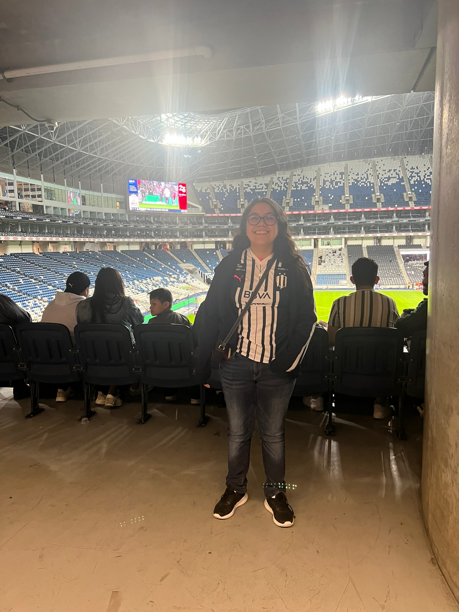
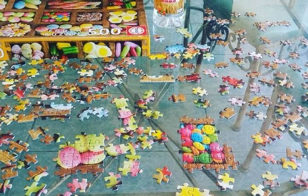
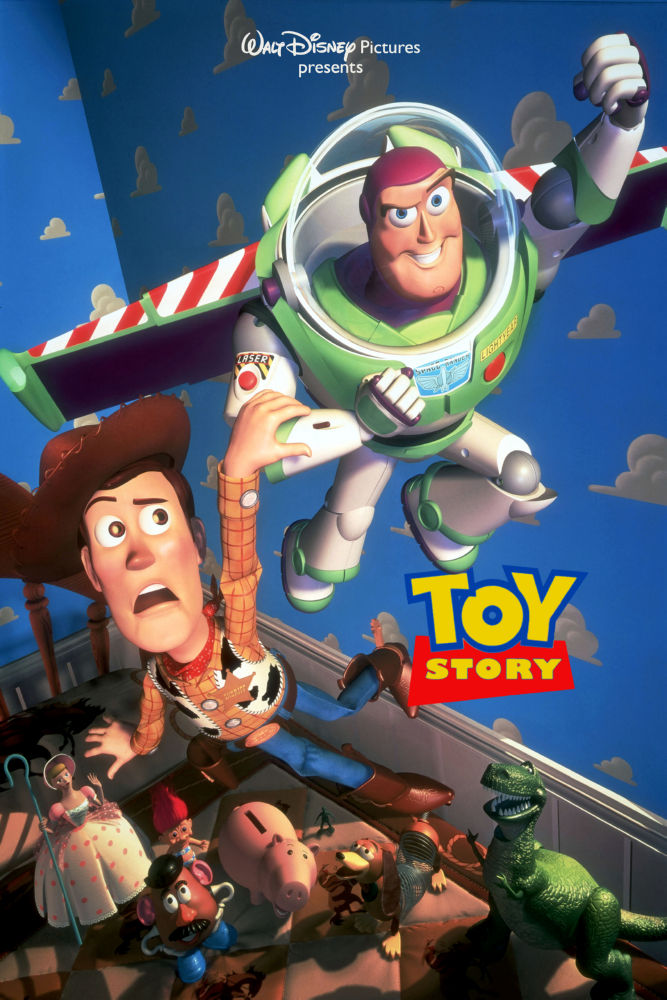
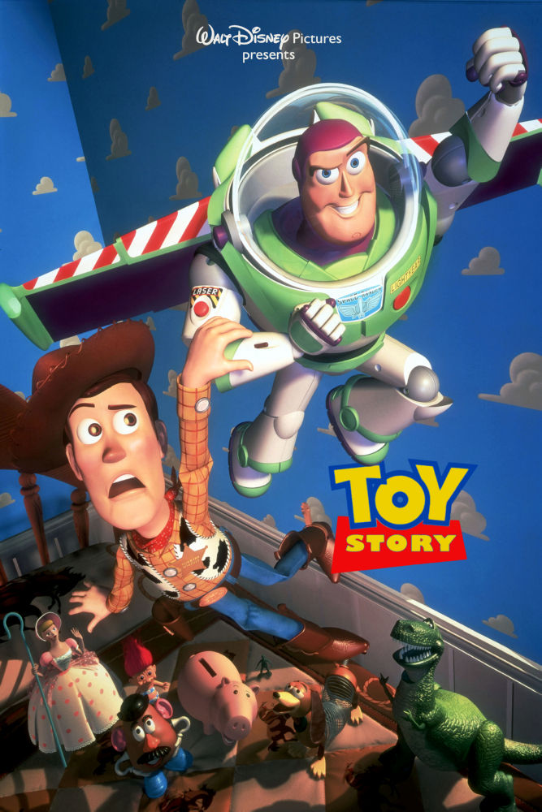
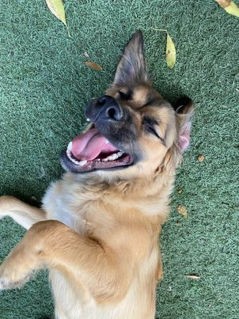

Tengo 22 años, naci el 14 de agosto del 2000 y soy de Monterrey. Estudio Comunicación y Medios Digitales en el Tec en campus Monterrey.
Me gusta hacer rompecabezas. Me gusta cocinar y comer lo que cocino. Me gusta mucho escuchar música, mis artistas favoritos son Taylor Swift y Dreamcatcher. Me gusta ver el fútbol femenil, mi equipo favorito son las Rayadas del Monterrey, cuando tengo la oportunidad voy al estadio a ver sus partidos.
Mis películas favoritas son The Handmaiden, Toy Story, Booksmart y Quien Engaño a Roger Rabbit. Mis series favoritas incluyen Warrior Nun, Los Simpsons y One Day at a Time
 


Tengo 2 perros, Toby y Bruno.
